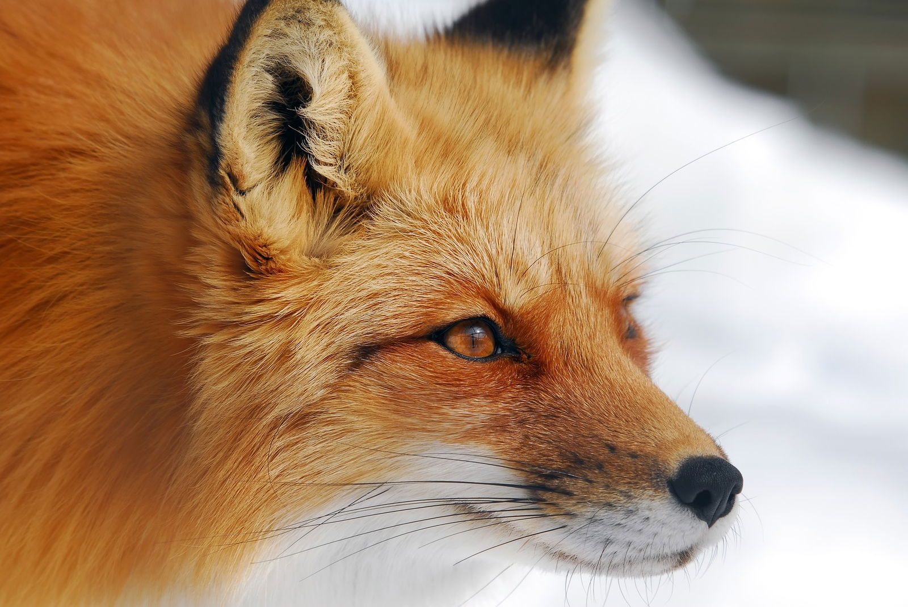

Fajok
- Indiai róka vagy bengál róka (Vulpes bengalensis)
- Afgán róka (Vulpes cana)
- Ezüsthátú róka (Vulpes chama)
- Pusztai róka (Vulpes corsac)
- Tibeti róka (Vulpes ferrilata)
- Sarki róka (Vulpes lagopus)
- Fakóróka (Vulpes pallida)
- Homoki róka (Vulpes rueppellii)
- Kitróka (Vulpes macrotis)
- Prériróka (Vulpes velox)
- Vörös róka (Vulpes vulpes)
- Sivatagi róka (Vulpes zerda)
Halász Dominika